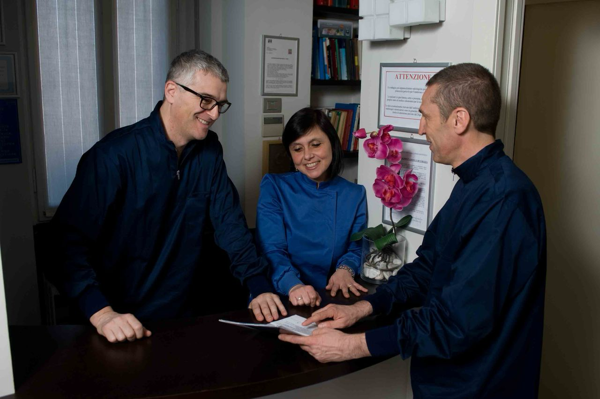
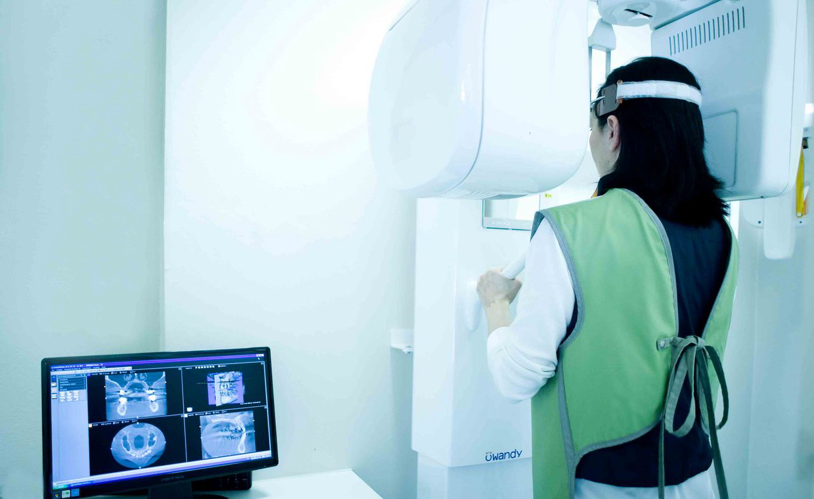

Chi Siamo
Dal 1964 al servizio della salute dei nostri pazienti, con professionalità e dedizione.
La nostra storia
Il Centro Medico Minetti nasce a Milano nel 1964 come studio dentistico con la missione di offrire cure odontoiatriche e mediche di alta qualità, accessibili e personalizzate. In oltre sessant'anni di attività come dentisti e medici a Milano, abbiamo costruito un rapporto di fiducia profondo con migliaia di pazienti e le loro famiglie.
Oggi il Centro Medico Minetti è una realtà polispecialistica con due sedi — a Milano e a Tione di Trento — che offre un'ampia gamma di specializzazioni mediche sotto lo stesso tetto, garantendo un approccio integrato e coordinato alla salute del paziente.
La salute è un bene prezioso da preservare con cura e impegno. Questo principio guida ogni nostra decisione: dall'investimento in tecnologie all'avanguardia alla formazione continua dei nostri specialisti, dalla cura dell'ambiente alla qualità dell'accoglienza.


La nostra missione
Offriamo un'assistenza sanitaria di qualità elevata e personalizzata, in cui i professionisti di diverse discipline collaborano all'interno dello stesso studio per garantire una valutazione a 360 gradi del paziente.
Crediamo nella medicina di prossimità: un medico che conosce il paziente, la sua storia, le sue esigenze. Non solo una prestazione, ma una relazione di cura continuativa.
Investiamo costantemente in ricerca, innovazione e formazione per offrire ai nostri pazienti l'accesso alle terapie più moderne ed efficaci.
Prenota una visitaI nostri valori
I principi che guidano il nostro lavoro ogni giorno.
Qualità
Standard clinici elevati, tecnologie all'avanguardia e aggiornamento professionale continuo per garantire le migliori cure.
Personalizzazione
Ogni paziente è unico. Offriamo percorsi di cura su misura, costruiti attorno alle esigenze individuali di ciascuno.
Collaborazione
I nostri specialisti lavorano in sinergia, condividendo competenze per una visione completa e integrata della salute del paziente.
Esperienza
Oltre sessant'anni di attività ci hanno dato una competenza unica nella gestione delle più diverse problematiche di salute.
Innovazione
Investiamo continuamente in nuove tecnologie e metodologie diagnostiche per offrire trattamenti sempre più efficaci e meno invasivi.
Fiducia
Il rapporto con il paziente si fonda sulla trasparenza, sull'ascolto e sulla continuità della cura nel tempo.